Ano, přiznávám, že je to už trochu “prošlé” téma, ale když mně se dnes tolik chce psát a vlastně nemám nijak zvlášť o čem - proto jsem se rozhodla pustit do jednoho staršího restu… A vůbec mi nepřipomínejte, že mě na ploše čeká soubor “Diplomová práce”, jehož momentální rozsah je nějakých 5-6 stran, ehm… 8-)
Do Krkonoš jsme s Péťou vyrazili v polovině září na voucher ze Slevomatu. Byla to vpodstatě naše jediná pořádná loňská dovolená, takže jsme si ji chtěli maximálně užít. Přístřeší nám poskytnul sympatický penziónek “Na Salaši” v Peci pod Sněžkou…
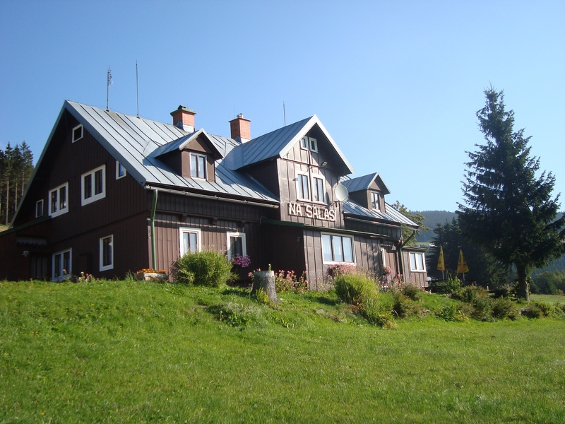
Na Salaši :-)
A tady už vyrážíme na naši první túru - a rovnou na Sněžku, dokud jsme plní sil :D!
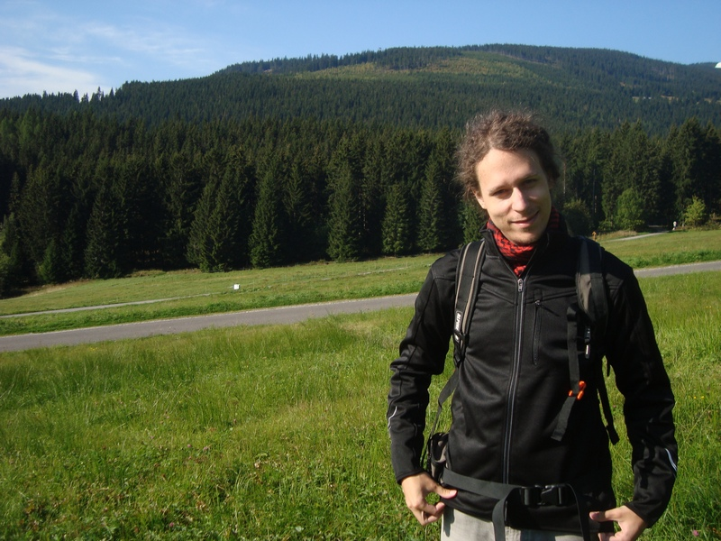
Péťa jako zkušený horal!
Cestou jsme se kochali krásnou faunou i flórou…
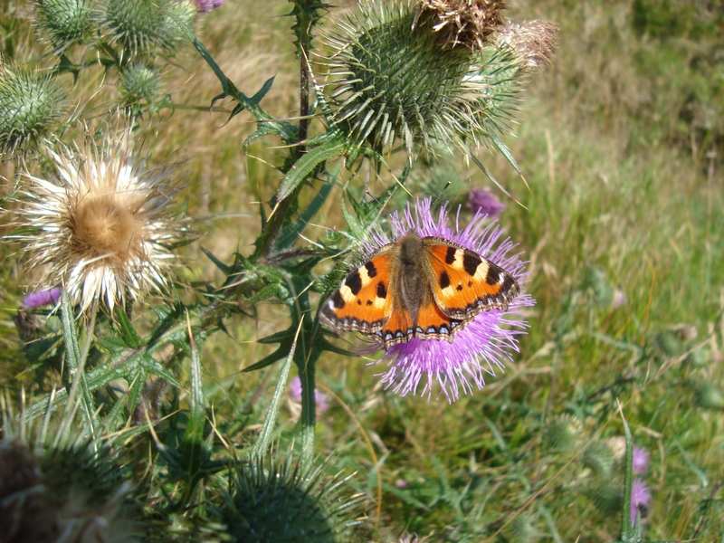
Motýlek a bodlák
V tomhle kopci už trochu dochází síly :D…

Ale ten výhled za to stál :-)…

To víte, ode mě se žádné odbornosti nedozvíte, za toho půl roku už jsem všecko zapomněla :D… tak aspoň zajímavosti z cedule.

Prošli jsme Úpská rašeliniště… no a kdy už bude konečně ta Sněžka??
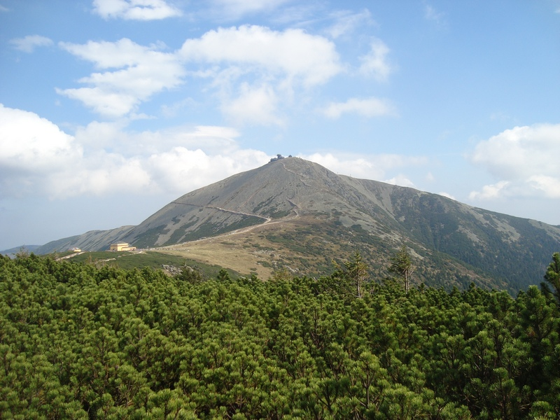
Tady je :-)!!
A už se tam škrábeme…
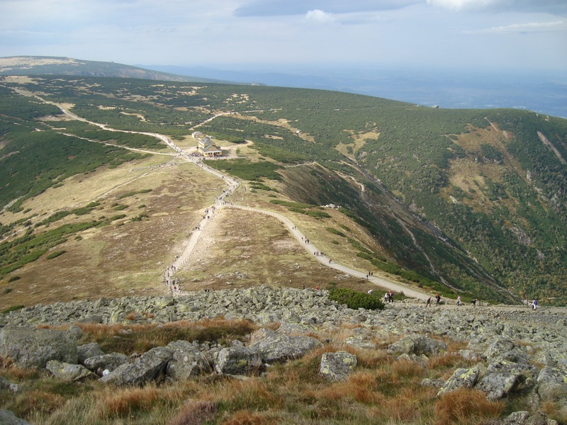
Do Polska coby kamenem…
Pod Sněžkou pěkně přituhlo, takže jsme nahodili bundy a vydali se pokořit naši nejvyšší horu. Byla to docela fuška, ale i v této etapě naší cesty jsme si našli čas a zbytek energie na nějaké to malé kešování O:-).
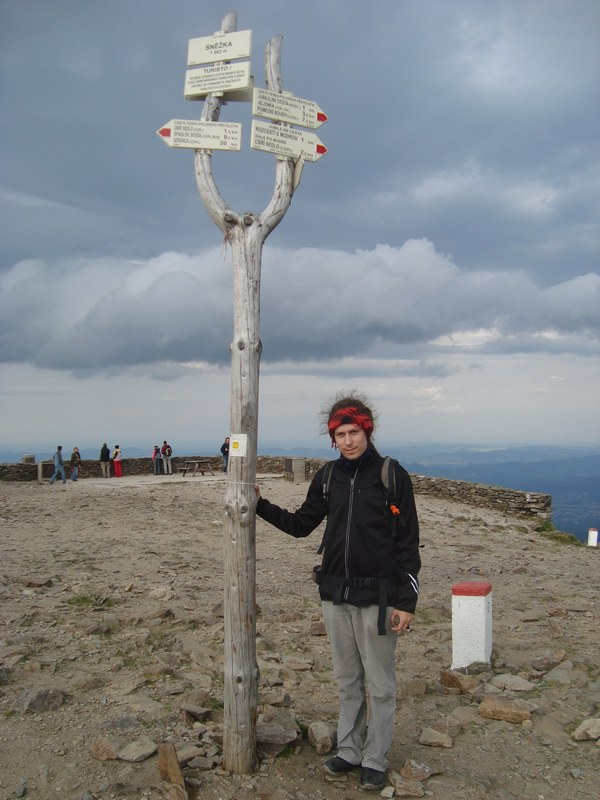
Sněžka pokořena :)!!
Na Sněžce nás zastihly nebezpečně vyhlížející mraky, takže jsme se honem pokochali výhledem, vyfotili se na všecky světové strany, a protože nás čekala ještě dlooouhá cesta zpátky do penzionu a večeře se vždy podávala v přesně stanovený čas, pustili jsme se pomalu do sestupu.
A už tu máme druhý den, počasí ještě stále docela přeje, takže vyrážíme na výlet do Jánských lázní :-) a navečer se v Peci vydáváme po stopách další kešky na ledovcovou morénu. Po večeři se pak v jídelně opíjíme svařákem a je nám blaze - škoda, že zítra už musíme domů :_(.
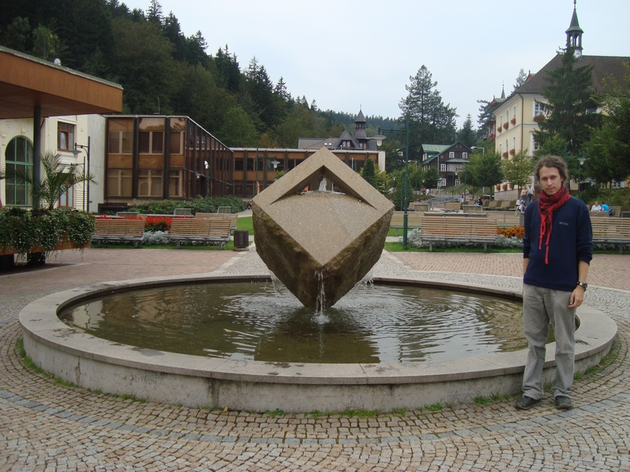
V lázních je mrtvo
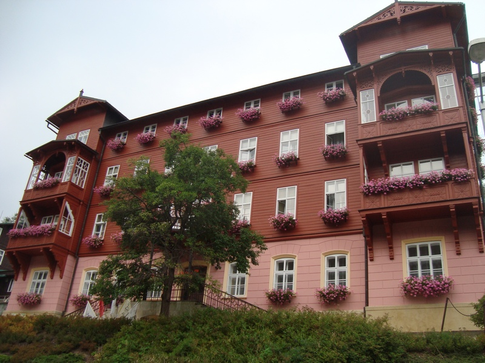
Jánské lázně
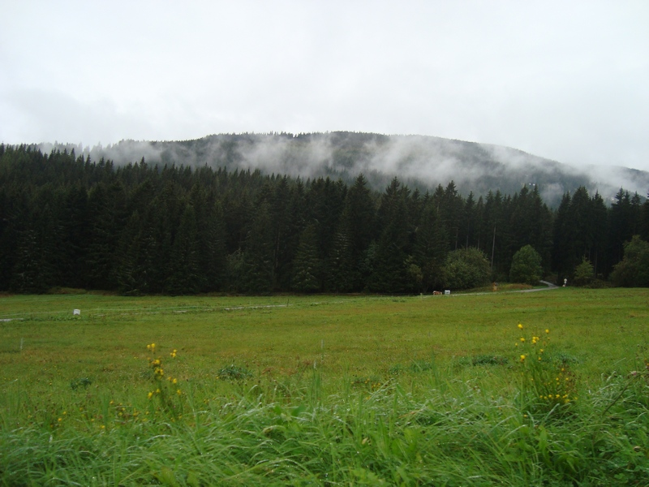
Zpátky v Peci
Poslední den našeho pobytu už se do hor bohužel nevydáme, od rána prší a je vůbec tak nějak pošmourno - volíme tedy alternativní program, který se jeví také víc než příjemně a vyrážíme do dalších lázní, tentokrát do Poděbrad :-)! Při této příležitosti si můžeme zanotovat oblíbenou písničku Holky z Polabí. A vyfotit se u té slavné poděbradské brány :D!!!
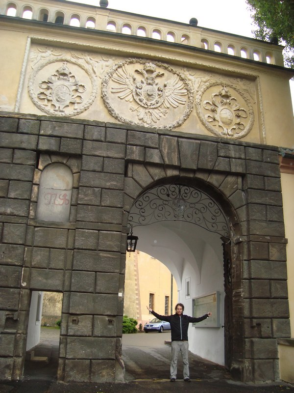
Póóóděbradská brána :D
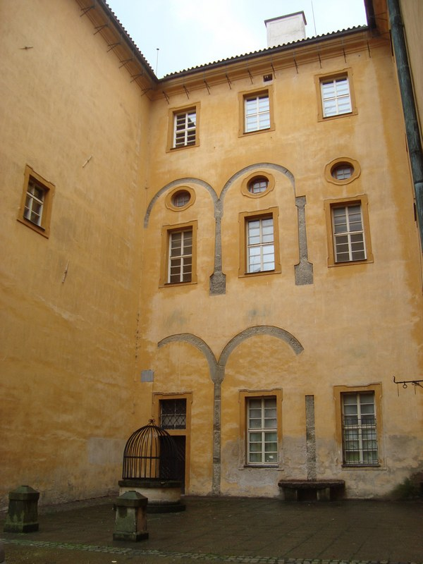
Tak hurá na první kešku!
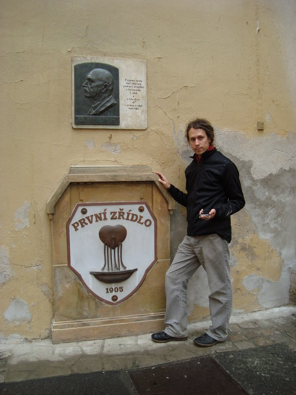
První zřídlo
Co by to bylo za návštěvu lázní, bez ochutnání nějakého toho léčivého pramene ;)…
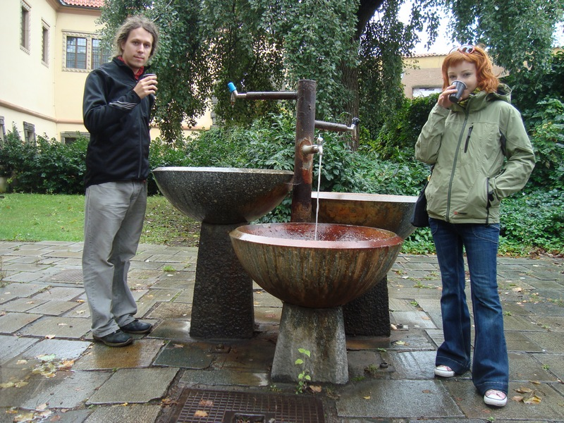
Tenhle byl teda pěkně hnusnej :D!
Se sochou slavného rodáka Jiřího z Poděbrad jsme si užili své :D… Po tragikomické sérii nepovedených fotografií, kdy nám náhodní kolemjdoucí nejprve uřezali nohy, poté zase našemu panovníkovi hlavu, jsme se shodli na tom, že obyvatelé Poděbrad zkrátka fotit neumí a zvěčnili jsme si Jiříka raději sami… bez nás, bohužel :D.
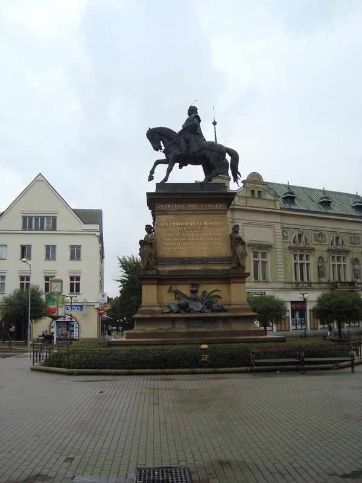
Jiří z Poděbrad
Fotografický talent místních obyvatel nás tedy poněkud zklamal - co nás však nadchlo byl nádherný lázeňský park, který rozhodně musíme ještě někdy navštívit, až bude počasí víc přát. Vám to samozřejmě doporučuji také, až budete mít někdy cestu… nebo až vás nedejbože bude trápit srdce!
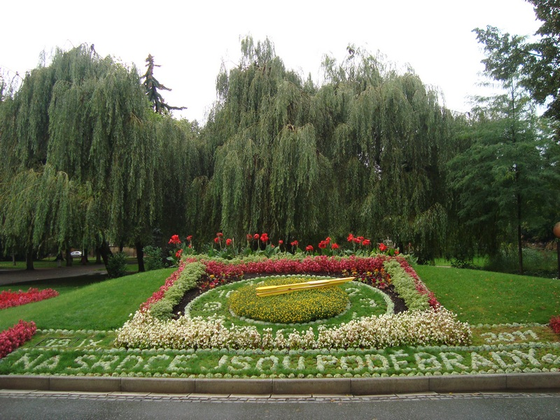
Květinové hodiny
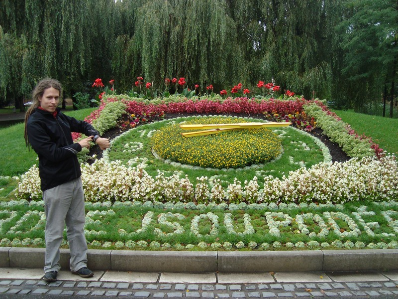
Jdou přesně :)
Ještě posledních pár fotek v parku, poslední ochutnávka pramene a už je načase se s lázněmi rozloučit…


A to už jsme i u konce naší cesty - plní zážitků, zocelení a unavení :-)… A hlavně natěšení na to, až zase přijde jaro a s ním i nová toulací sezóna :-)!

Komentáře (3)
Komentáře jsou uzavřené.